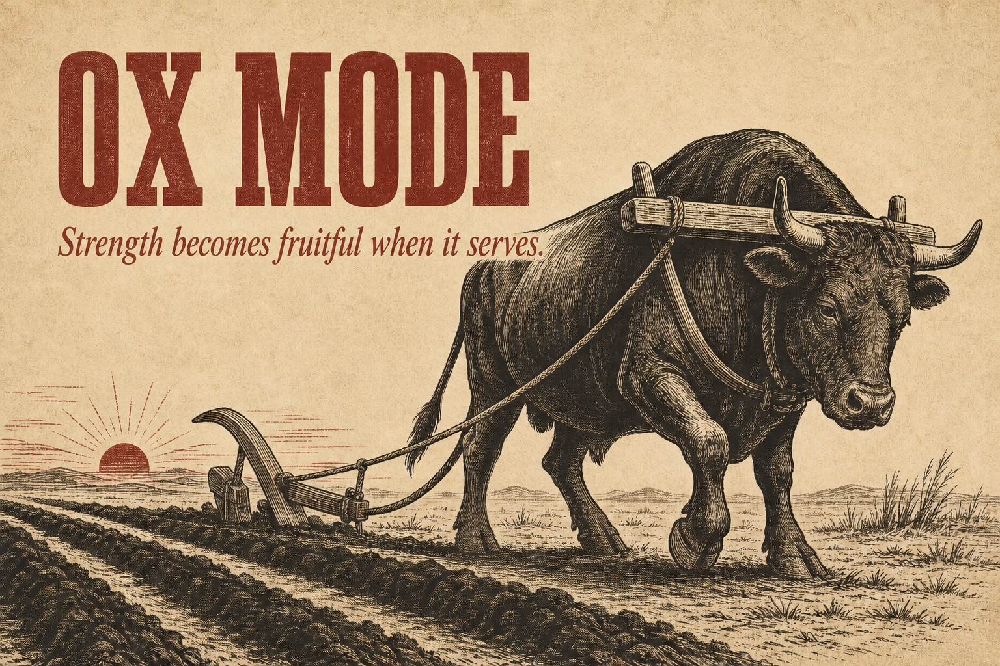

Given, not chosen.
You plow what is in front of you. Searching for a better field is often the avoidance mechanism.
A counter-ethos for the chronically un-landed
Ox Mode is a bounded season in which unused strength accepts a rightful purpose—and becomes provision, continuity, and life for others.
Secular in practice. Older in its roots. Open to anyone.

What this is
Ox Mode is for the gifted, interior, generative person who can learn anything and finish nothing—the person whose river of output never pools, who keeps improving the workshop while the actual work remains perpetually about to begin.
You plow what is in front of you. Searching for a better field is often the avoidance mechanism.
The ox cannot comprehend the whole farm. It can accept the harness that joins its power to a purpose larger than itself.
The plow opens the earth. Crops grow. The farmer, family, ox, and other animals are fed. Exertion becomes a flourishing system.
The question before the yoke
Discomfort does not prove that an alignment is right. A yoke can be difficult and still be the wrong yoke.
Everyone has something larger than themselves to which it is right to be aligned. Naming that allegiance—truthfully, without borrowing another person’s answer—is your first and most serious work.
Ox Mode cannot tell you what deserves your strength. It can help you stop withholding your strength once you know.
The adversary
The eternal child
Not lazy. Often prodigiously productive. A genius at learning—and therefore never required to finish.
Learning is intrinsically rewarding and infinitely extensible. Every mastery reveals three adjacent masteries. But learning is supposed to become instrumental. You learn so that you can do, and doing eventually requires stopping the learning.
Watch how drift dresses itself:
The real calling is so large it cannot begin yet.
One more tool, framework, corpus, or system—and then.
Shipping before it is right would be a betrayal.
A noble idea quietly used to delete the labor.
Building the workshop instead of making the thing.
First principles
These are not aspirations to admire. They are decisions made before the interesting alternative arrives.
Impulse is not evil; it may be where your best work begins. But the people who depend on you cannot be paid in insight. The measure is not the ceiling of your capability. It is the floor of your reliability.
The arena is chosen by whoever needs you. That is what makes it an obligation rather than another project selected for its appeal.
Accounting. Taxes. Listings. Following up. Answering the email. The gifted mind has an exquisite instinct for deciding which task is beneath it. In Ox Mode, aversiveness may be evidence of relevance.
Drift happens when there are no documented walls. An unbounded intuition can expand to civilization-scale and feel like progress the whole way. Write down what is out of bounds.
This does not mean abandoning standards. It means using the standard proper to the present phase. An acorn is not a bad oak tree. It is a good acorn.
If your standards are why nothing exists, your standards cannot remain the release authority. Give a trusted person real power to define viable and set the date.
Ox Mode has an end date. Name it. You are not permanently replacing your nature. You are entering a defined season in order to finish a given field.
You cannot guarantee that the field yields. You can decide not to abandon your principles while working it. Judge the promise you kept, not the weather you could not control.
If effort in the world feels only like survival, it will not last. Hold the work as an offering: Here is what I made. It is not everything. It is real.
Ox Mode may ask the ascetic to want a material outcome, care about money, or sell—precisely because that is the field identity has learned to avoid. It does not promise escape from pride. It promises a furrow.
“The people who depend on you cannot be paid in insight.”
A human operating system
Ox Mode is a package of ideas for aligning a life. Take it apart. Test it. Adapt it. Keep what proves true and offer back what you learn.
No paywall. No proprietary initiation. No merch required. Merch, apparently, remains under consideration.
Minimum viable structures
Start with the structures that make drift visible quickly and return ordinary.
Begin each waking period with the obligation—not email, reading, or the interesting thing. The first act loads the operating system for the day.
Name core work days, a half-day for the unglamorous, a day for the people the yoke is for, and a day of genuine rest. Name exceptions in advance.
Ask: Is what I did something I could describe, in the terms of the people this is for, as making their life better?
Do not confuse “not now” with “against my values.” Pilot-light beloved work at minimal maintenance. Remove only what is truly incompatible.
Tell people. Give them permission to ask, “Is that Ox Mode?” A commitment held only inside the drifter’s head is being guarded by the drifter.
The ocean does not fit in the cup. Ship a true reduction of what you see—never a cup pretending to be the ocean.
On failure
Lapse is assumed. Dishonesty is not.
You will drift, binge, rationalize fascinating research, or have a day when “functional” is the honest victory. None of this breaks Ox Mode.
Pretending it did not happen
Redefining the commitment downward to accommodate it
Quitting because the lapse proved the whole thing was fake
Rest belongs inside the mode. The practice is truthful return—not an uninterrupted performance of discipline.
What Ox Mode is not
The right output, not maximal output.
Hustle is often novelty appetite wearing a stopwatch.
Rest and relationship are parts of the field, not rewards after it.
If it has no end, it is a life you may quietly resent.
You do not become the ox. You put on the yoke—and later take it off.
Begin without building a new workshop
The larger allegiance is yours to discern.
A person or people—not an abstraction.
No searching for the ideal version.
A real end date, plus the admirable forms of drift that are out of bounds.
Give that person actual authority.
Then do one unglamorous thing before improving this plan.
Field language